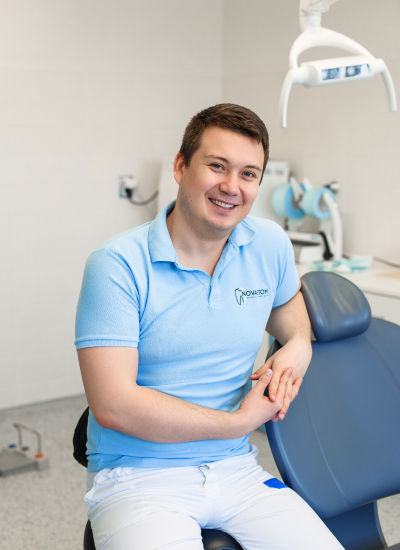

Владимир КАчмар
Главный врач

После получения высшего образования в 2007 году продолжил обучение эстетической стоматологии
в частных чешских, украинских и итальянских академиях. Участвовал в восьми восточноевропейских
выставках по пародонтологии и имплантологии. Владеет пятью языками. Является членом
международной группы по имплантологии (ITI) и образовательной платформы DentalXp. Считает,
что в стоматологии одинаково важны медицинские знания, эстетика и отточенное мастерство.
Бирюков Александр
Стоматолог-хирург

После получения высшего образования в 2007 году продолжил обучение эстетической стоматологии
в частных чешских, украинских и итальянских академиях. Участвовал в восьми восточноевропейских
выставках по пародонтологии и имплантологии. Владеет пятью языками. Является членом
международной группы по имплантологии (ITI) и образовательной платформы DentalXp. Считает,
что в стоматологии одинаково важны медицинские знания, эстетика и отточенное мастерство.